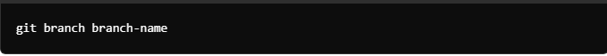

Git is a distributed version control system (dVCS). As the name suggests, version control is all about controlling and tracking different versions of a given project.
A VCS tracks and records changes to any file (or a group of files) allowing you to recall specific iterations later on or as needed. VCSs are sometimes called source code management (SCM) or revision control systems (RCS). Version control allows numerous team members to work collaboratively on a project, even if they’re not in the same room or even country. For example, let’s say you’re a songwriter. You’re busily working at home on a new song you’ve penned, but you’re not quite happy with it. So you decide to collaborate with two other songwriters to tackle the bits that need work. You and the two other songwriters begin making tweaks to the lyrics and the musical score, with each of you working independently. When the other musicians send you their versions of the song, you like some of the changes they made but not all of them. Now imagine that you can see every change in each version of the song, you can test these to see how they sound, and then synchronize the changes you like across versions. This is what Git allows users to do. Individuals can work on a project locally (on their own computers), save any changes that work, then synchronize those changes to a Git repository so others can see their newer version.
Other version control Systems include:Beanstalk,Gitlab,Perforce,Mercurial,CVS among others.Buckle your belt as we delve intoThe Git and Git Hub With that said let us learn on how to install this amazing version control system, create a website with it and finally deploy.
let us first of all check whether we have GIT installed by running the following commands on our CMD
If it doesnt exist that means we have to download and install with this quick steps.
Open your terminal or commandprompt and configure your username and email by passing the below commands.This details will be used in your commits.
A Git repository is a storage space where your project's files and their revision history are kept. Git, a version control system, helps you track changes to your code and collaborate with others.To initialize git you first of all ensure you are in the repository you want to initialize then you run the following command.
The staging area is a file, generally contained in your Git directory, that stores information about what will go into your next commit.You can add your files from the workspace to the staging area. Before adding them you can check if, there exists any untracked file by using the command:
untracked files simply refer to files that are in my directory but are not in the staging area while tracked files are files that are in the staging area.
A commit in Git is basically a snapshot of your project at a particular point in time. Each commit captures the state of the files in your working directory and includes a unique identifier (a SHA-1 hash), a commit message, and metadata such as the author and timestamp. Suppose if somebody changed something in the file say “a.txt” we need to add those changes in the repository for that we will be using the command git add file_name, and to make a commit we will be using the command. The extra time it takes to write a thoughtful commit message as a letter to your potential future self is extremely worthwhile. On large scale projects, documentation is imperative for maintenance.
Branching means diverging from the mainline and continue to work separately without messing with the mainline.When you make a commit, Git stores a commit object that contains a pointer to the snapshot of the content you staged. This object also contains the author’s name and email address, the message that you typed, zero parents for the initial commit, one parent for a normal commit, and multiple parents for a commit that results from a merger of two or more branches. Git branches are effectively a pointer to a snapshot of your changes. When you want to add a new feature or fix a bug—no matter how big or how small—you spawn a new branch to encapsulate your changes.
Creating a branch in Git is a common task for managing different lines of development. Here’s how you can create and work with branches: Create a New Branch: Use the git branch command followed by the name you want for the new branch: 
To view all branches in git you run the following commands:
sInorder to know the branch that is active you check the one that is highlighted with an asterik next to its name.just that simple.
To switch to a different branch in Git, use the git checkout or git switch command.Replace branch-name with the name of the branch you want to switch to. Make sure to commit or stash any changes in your current branch before switching to avoid losing work
Switch to the branch you want to merge into,Merge the other branch then Resolve any conflicts (if there are any), then commit the changes:
Delete a branch with git branch -d
Since you have familiarised with git and some of it most used commands you can make your experience more magical by learning Git Hub.